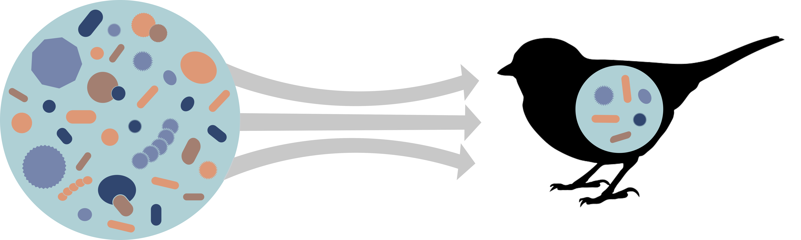

<font face = "Avenir" size = "20">
<h3>Priscilla A. San Juan</h3></font>


<font face = "Avenir"><p style="color:#848484;font-size:13px;">
<div class="blurb">
I'm a PhD candidate in the Department of Biology at Stanford University on the Ecology/Evolution track. I study host-associated microbiomes. 
<a href="/about">Read more about me here...</a>
</font></p></div><!-- /.blurb -->
<br>
<a class="twitter-timeline" data-width="600" data-height="300" data-theme="light" href="https://twitter.com/priscillaasj?ref_src=twsrc%5Etfw">Tweets by priscillaasj</a>
<script async src="https://platform.twitter.com/widgets.js" charset="utf-8"></script>
